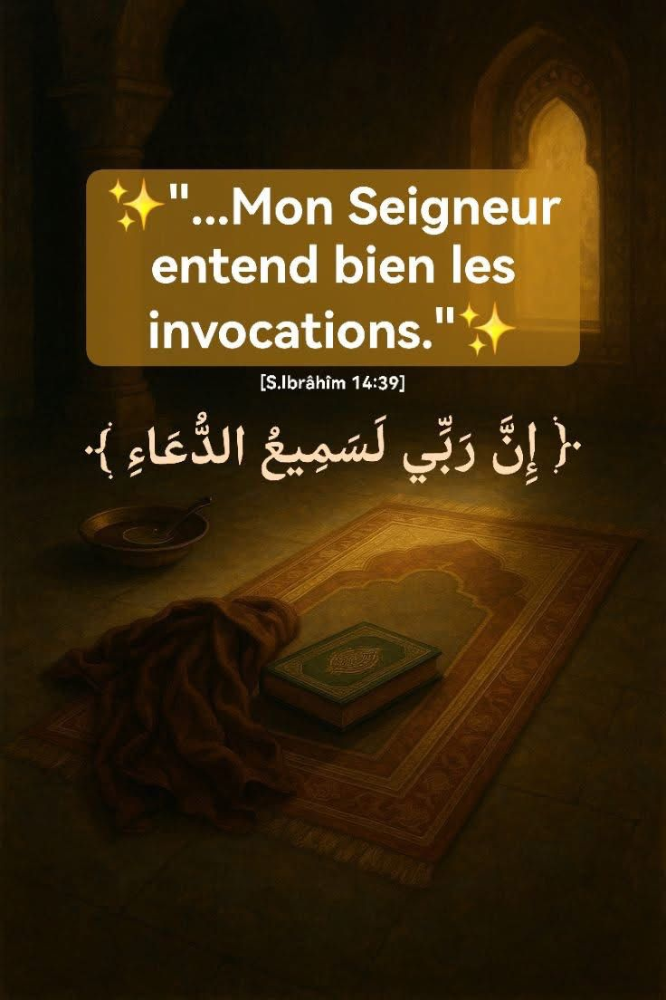

"Mon Seigneur entend bien les invocations" - Une certitude ancrée dans la foi
Ce verset, prononc√© par le Proph√®te Ibr√¢h√Æm ÿπŸÑŸäŸá ÿߟÑÿ≥ŸÑÿߟÖ, est une d√©claration de foi pleine de confiance. C'est une certitude absolue, sans doute, sans h√©sitation : Allah est Celui qui entend toutes les invocations, m√™me celles qui ne sont pas formul√©es par des mots.
Une foi ferme en l'écoute divine
À travers ces quelques mots, Ibrâhîm (paix sur lui) témoigne de sa confiance totale en Allah, non seulement comme Créateur et Maître des mondes, mais aussi comme Celui qui est proche, Celui qui entend, Celui qui répond.
Dans ce contexte, il venait tout juste de remercier Allah pour lui avoir accordé des enfants malgré son grand âge. C'est à ce moment précis qu'il affirme : "Mon Seigneur entend bien les invocations."
Que veut dire "Samîu ad-Duâ" (سَمِيعُ الدُّعَاءِ) ?
Celui qui entend parfaitement, sans limite, sans barrière
L'invocation, mais aussi tout appel sincère adressé à Allah
Les prières prononcées à haute voix
Les soupirs et pensées cachées au fond du cœur
Cela signifie que même quand on pense ne pas savoir bien invoquer, Allah entend quand même. Ce n'est pas la beauté des mots qui compte, mais la sincérité du cœur.
Quand tu invoques, Il entend.
Ce verset est un réconfort immense pour quiconque traverse :
• Une épreuve
• Une attente (comme celle d'Ibrâhîm pour avoir un enfant)
• Une situation bloquée où l'on se sent impuissant
Il te rappelle ceci : Tu n'es jamais ignoré.
Chaque prière, chaque larme, chaque appel intérieur… Allah l'entend.
Ce verset nous encourage à continuer d'invoquer, avec patience, avec foi. Même si la réponse tarde, ou prend une autre forme que celle attendue, le lien avec Allah reste vivant par l'invocation. C'est une preuve d'amour et de confiance que de continuer à parler à Allah, encore et encore.
Conclusion :
Dans cette courte parole du Prophète Ibrâhîm, nous retrouvons une immense force spirituelle. Il ne doute pas, il affirme. Il ne demande pas : "Est-ce qu'Il m'entend ?" Il dit : "Il entend bien les invocations."
Et c'est ce que tout croyant doit se répéter, surtout dans les moments de solitude ou d'attente :
"Mon Seigneur m'entend." ü§ç